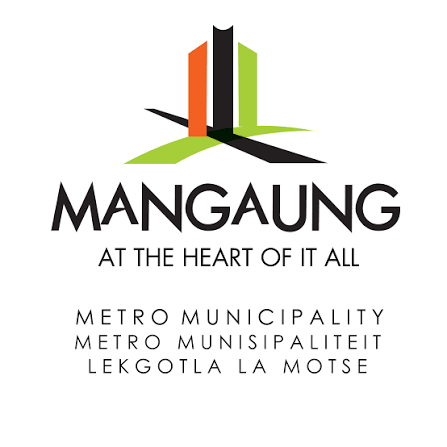
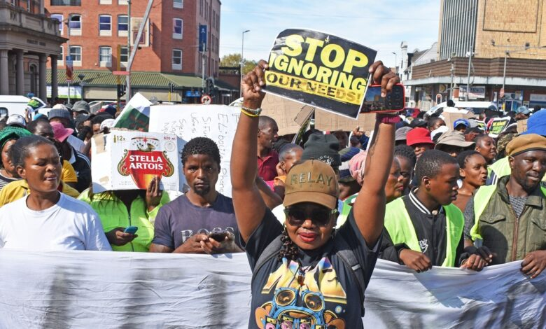
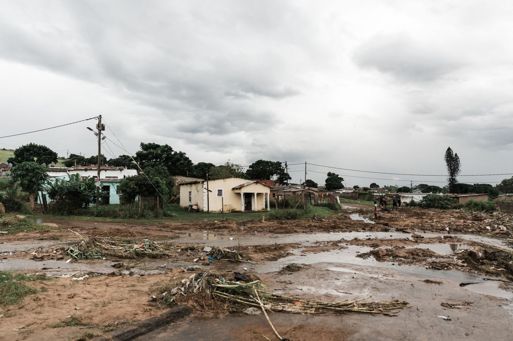
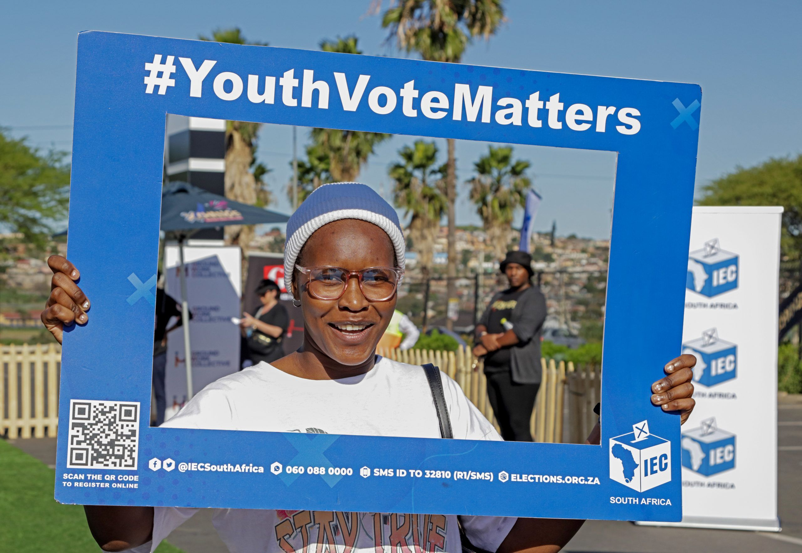
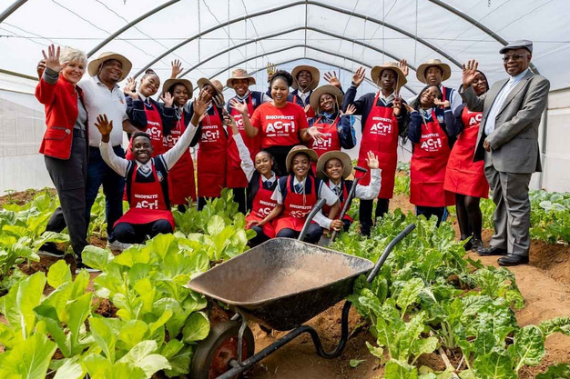
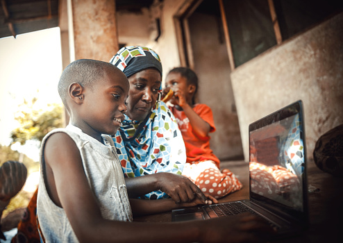

The Mangaung Community Channel is a platform created to highlight the people, activities, and opportunities that make up the Mangaung community.
It brings together useful local information in one place, making it easier for residents to discover what is happening around them and stay connected to their area.
The channel can feature community stories, local events, interviews, announcements, youth activities, small businesses, and community projects.
It also creates an opportunity for residents and organisations to share their work, promote initiatives, and reach a wider local audience

Gives residents an opportunity to share their experiences, ideas, and stories.

Helps people discover activities, programmes, and developments happening around Mangaung.

Highlights opportunities, activities, and achievements involving young people.

Draws attention to projects and initiatives that contribute to local development.

Makes useful community information easier to find in one place.
Our goal is to create a space where Mangaungs people, ideas, and opportunities can be seen, shared, and celebrated.
Do you want to volunteer, become a sponsor, or ask us questions? Click here to enquire about what is happening.
At the heart of it all - @2026